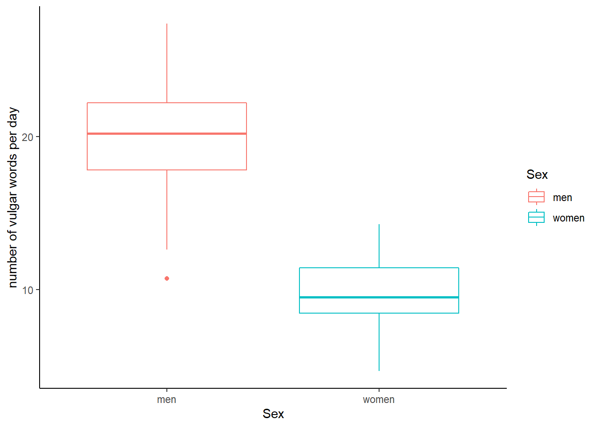

Welcome to GEOG3006: Quantitative methods, a course where you will learn how to use R, wrangle (yes I already begin with some technical terms ;) ) and analyse your data!
I must say this document is heavily inspired from: Introduction to R by Claudia A Engel, I am just simplifying a little bit more.
You will learn:
Before I continue my explanations I would like you to install R and Rstdio …
First of all, R and RStudio are two different programs. R is the underlying statistical computing environment, but using R alone is no fun (it is very ugly!). RStudio is a graphical integrated development environment (IDE) that makes using R much easier and more interactive. You need to install R before you install RStudio.
I assume that some of you have Mac OS while others have windows (some of you may have Linux). No problem in both cases!
for MAC download the R-3.6.1.pkg from this website for Windows download R from here If you have Linux I’m sure you can easily find a way to install R ;)
Now you can open R, see how ugly it is! To make the visual better let’s install Rstdio!
Download and install the version 1.1.463 from the Rstudio website. Make sure you download Mac OS X if you are using a Mac and Windows if you are using … Windows.
Okay, I have been a little bit fast with my explanations about R and R studio. In this section I will go more in details.
The term “R” is used to refer to both the programming language to write scripts and the software (“environment”) that interprets the scripts written in R. It is an alternative to other statistical packages such as SPSS (what was used for this course before), Stata or Matlab. R lets you perform a wide variety of things: data vizualisation, statistics, GIS and a whole lot more! In fact, this document is written in R :)
R studio is an interface which allows you to interact with R in a much funnier way. You can write your scripts, open projects and make your programming life easier.
The learning curve might be steeper than with other software (see the figure), but with R, the results of your analysis does not rely on remembering a succession of pointing and clicking, but instead on a series of written commands, and that’s a good thing! So, if you want to redo your analysis because you collected more data, you don’t have to remember which button you clicked in which order to obtain your results, you just have to run your script again.
Even though it sounds fastiduous at the beginning working with scripts makes the steps you used in your analysis clear and reproducible. Also, sharing your script with another R-fellow will help you spot unforeseen mistakes or even to improve your coding skills.
Working with scripts forces you to have a deeper understanding of what you are doing, and facilitates your learning and comprehension of the methods you use.
Thousands of people use R daily! The R community is extremely active and whenever you will encounter a problem you can easily find a solution on StackOverFlow or GitHub - let’s face it, at EVERY level a programmer experience problems, that’s part of the fun!
Moreover, R is used in all disciplines! Statistical sciences, ecology, sociology, psychology, political sciences etc. make extensive use of this programming language.
Anyone can inspect the source code to see how R works. Because of this transparency, there is less chance for mistakes, and if you (or someone else) find some, you can report and fix bugs.
This means that everyone can contribute to improving R! All the work done in R and the help provided is done primarily by volunteers!
You can make beautiful graphs in only a few lines of codes! You want the proof? Okay, let’s do it.
#I open the libraries I need - don't worry about it now
library(ggplot2)
library(viridis)## Loading required package: viridisLite#Here I simulate a dataset, let's say it represents the number of vulgar words per day for each sex
data <- data.frame(n.insult = c(rnorm(60, mean=10,sd=2), rnorm(40, mean=20, sd=4)),
Sex = c(rep('women', 60), rep('men', 40)))
#And now the graphic (just 4 lines of code)
ggplot(data, aes(x=Sex, y=n.insult, col=Sex)) +
geom_boxplot() +
theme_classic() +
xlab('Sex') + ylab('number of vulgar words per day')
#It seems that women are less vulgar than men ...I hope I managed to share my enthusiasm for R and that you are more curious about this programming language!
Okay, now that I have convinced you of the usefulness of R let’s get a bit more familiar with RStudio before moving to the really fun stuff!
Let’s start by learning about RStudio, which is once again an Integrated Development Environment (IDE) for working with R. The RStudio IDE is an open source product and is free.
During this course - and hopefully after this course - you will use RStudio IDE to write code, navigate the files on our computer, inspect the variables we are going to create, and visualize the plots we will generate.
RStudio is divided into 4 “Panes”:
Note that the placement of these panes and their content can be customized (see main Menu, Tools -> Global Options -> Pane Layout). I must say that I like it as it is but feel free to modify it!
Okay, now I would like you to stay focus. This part is from my experience very important, otherwise you are likely to have files, folders and scripts in messy places.
It is good practice to keep a set of related data, analyses, and text self-contained in a single folder. When working with R and RStudio you typically want that single top folder to be the folder you are working in. In order to tell R this, you will want to set that folder as your working directory. Whenever you refer to other scripts or data or directories contained within the working directory you can then use relative paths to files that indicate where inside the project a file is located. (That is opposed to absolute paths, which point to where a file is on a specific computer). Having everything contained in a single directory makes it a lot easier to move your project around on your computer and share it with others without worrying about whether or not the underlying scripts will still work.
Sounds confusing? Don’t worry, it’s very simple, stay still for a bit longer! Let’s start an R project for the course step by step :)
File menu, click on New project, choose New directory and Empty projectGEOG3006 and Create projectFiles tab on the right of the screen, click on New Folder and create a folder named data (see Figure 1.2)Files > New File > R script to open a new scriptCongrats, you’ve done the most difficult! It wasn’t so difficult? I told you ;)
Now, just below New Folder it should be written something like StudentName > Desktop > GEOG3006. This is your Working directory
It’s possible to change your working directory within the command line with. For example if I want to set my new directory in the folder you first need to click right on your folder > properties and copy the location. This gives more or less something like this:
setwd('StudentName/Desktop/GEOG_whatever') Is that clear? If it’s not, do not worry we will see that a bit more in detail during the Labs!
You can also check in which working directory you are by writting:
getwd()Wow, this was hard work! If you are still unsure about the notions of projects and working directory try to read a bit more about it on google.
Using a consistent folder structure across your projects will heavily impact your productivity. In a word, try to stay organized! This is especially useful when you are working on multiple projects. From my experience and what I see, the best way to organize your project is to have a folder for your data (that is the one you have already created), one for the scripts, one for the figues and another for the documents (your master thesis for instance).
The fun is soon to begin, just keep going! Here are some explanations about how R functions!
The basis of programming is that we write down instructions for the computer to follow, and then we tell the computer to follow those instructions. We write, or code, instructions in R because it is a common language that both the computer and we can understand. We call the instructions commands and we tell the computer to follow the instructions by executing (also called running) those commands.
There are two main ways of interacting with R: by using the console or by using script files (plain text files that contain your code).
The console pane in RStudio (left-down) is the place where commands written in the R language can be typed and executed immediately by the computer. It is also where the results will be shown for commands that have been executed. You can type commands directly into the console and press Enter to execute those commands, but they will be forgotten when you close the session.
If R is ready to accept commands, the R console by default shows a > prompt. If it receives a command (by typing Enter), R will try to execute it, and when ready, will show the results and come back with a new > prompt to wait for new commands.
If R is still waiting for you to enter more data because it isn’t complete yet, the console will show a + prompt. It means that you haven’t finished entering a complete command. It is very likely that you forgot a parenthesis (that happens to me a lot)
When this happens, and you thought you finished typing your command, click inside the console window and press Esc; this will cancel the incomplete command and return you to the > prompt.
Now, writing your code in the Console is a VERY, VERY bad habit and you should ALWAYS write your code in a script!
Because we want to keep our code and workflow, it is better to type the commands we want in the script editor, and save the script. This way, there is a complete record of what we did, and anyone (including our future selves!) can easily replicate the results on their computer.
The most important aspects of making your code comprehensible for others and your future self is adding comments about why you did something. You can write comments directly in your script, and tell R not no execute those words simply by putting a hashtag # before you start typing the comment.
For instance like this:
#I comment by adding a hashtag
getwd() #I can directly comment a line of code like thisNow that you have written your code you need to run it. You have two option, you first need to select the lines of code you want to run. You can do that by highlighting the lines with your mose. Then * Either you click on Run located on the upper left of the ‘Source’ pane * Or if you are a bit lazy you can just use Ctrl + Enter (Note that on Mac the shortcut is Cmd + Enter)
Before continuing take few minutes answering these questions:
Okay, we have finished this introduction! Now let’s the fun begin! You will create for firsts R objects and get to know the most important R structure: The data frame!